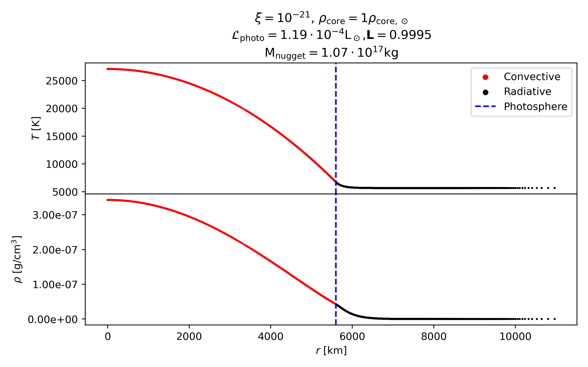
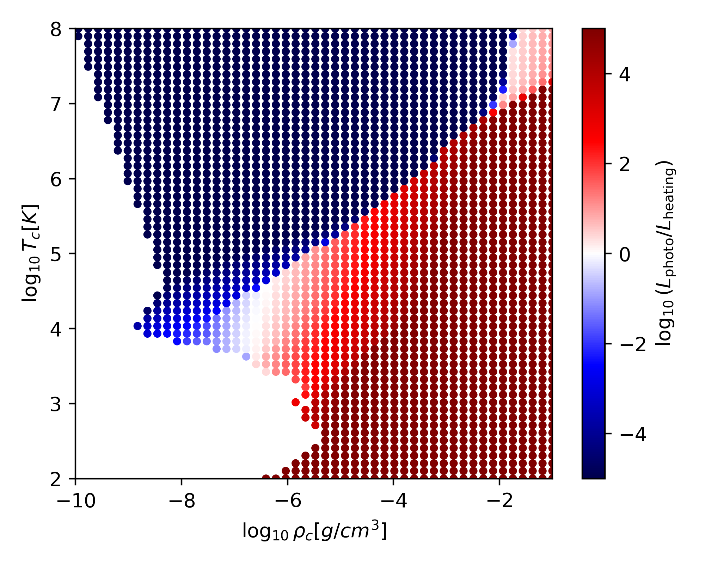

Academics
Education
Right now, I'm a 4th year undergraduate student at the University of Toronto. I'm in the Astronomy & Physics Specialist program as well as the Mathematics Major program. Below are some of the courses I've taken/am taking that I found interesting, challenging or notable:
WDW198: There and Back Again: Exploring Tolkien - Winter 2023
AST325: Introduction to Practical Astronomy - Fall 2024
PHY356: Quantum Mechanics I - Fall 2024
PHY252: Thermal Physics - Fall 2024
AST320: Introduction to Astrophysics - Winter 2025
MAT334: Complex Variables - Winter 2025
MAT363: Geometry of Curves and Surfaces - Winter 2025
PHY354: Advanced Classical Mechanics - Winter 2025
AST425: Research Topic in Astronomy - In Progress
PHY456: Quantum Mechanics II - In Progress
PHY489: Introduction to High Energy Physics - In Progress
APM426: General Relativity - In Progress
PHY450: Relativistic Electrodynamics - In Progress
Optically Thick Mirror Stars
This is a research project that I've been working on since January 2024.
Professors Chris Matzner and
David Curtin have been supervising,
and I've been working with Franco Cabral, another undergraduate at UofT.
Essentially all of the work has been completed at this point and we are working on polishing the paper for publishing.
When public, the code for the project will be available here, on GitHub, in the optically_thick folder.
The project as a whole is an extension of this paper by the previous pair of students under Chris and David's supervison, Isabella and Berkin. They were looking at specifically optically thin mirror stars while Franco and I look at optically thick ones. The first two sections of the optically thin paper provides a good introduction to mirror stars, but I will also give my own simplified version.
A mirror star is essentially just a dense clump of dark matter.
Many explanations of dark matter include introducing new particles, and some of these predict an interaction between multiple dark matter particles in a manner similar to familiar electromagnetism, complete with 'dark photons'. This means that this dark matter can dissipate energy and gravitationally collapse, much like how normal stars form from sparse clouds of gas, entirely invisible to us.
Another part of these theories of dark matter is that there is probably a very very small chance for dark photons and regular matter to interact, as well as regular photons and dark matter. This results in two things:
- Mirror stars can slowly collect regular matter.
- Regular matter inside a mirror star will be slightly 'heated' by surounding dark matter emitting dark photons.
In our work, we predict what electromagnetic radiation is emitted by the gas and dust inside a mirror star (we call this gas/dust ball a 'nugget'), describing what we would see if we were looking at one. This sets up future work to look in large catalogues of stars and find if we might have detected any already without knowing.
This rest of this section of my website will be about my part of this project: modelling the nugget's structure, and not about Franco's part: turning the nuggets into an observable light spectrum and then comparing with regular stars. We're currently editing the research paper for the project, and when it's on ArXiv I'll link it somewhere on this page and possibly elsewhere. When it's out I'll direct you to that for Franco's part.
As I mentioned earlier, Isabella and Berkin's project focused on mirror stars that are optically thin while mine and Franco's is about optically thick ones. This distinction is not an incredibly concrete line, but comes from how easy it is for light to travel through the object. In an optically thin object, an individual photon originating at the center is likely to make it all the way out into space without ever bumping into anything. In contrast, such a photon in an optically thick object is almost certain to bounce around many many times before escaping. We quantify this with a number called the optical depth $\tau$, which is distance measured in 'mean free paths' or how far a photon can go on average before scattering. Measuring from far away into the center of an object, $\tau \gg 1$ means optically thick, and $\tau \ll 1$ means optically thin. The optical depth will also be useful later on for deciding where the 'surface' of the nugget is.
We represent the dark-normal matter interaction by how strong the heating is, with the 'heating rate' parameter $\xi$. Physically, $\xi$ is the power delivered to a hydrogen atom in watts (J/s), when surrounded by a mirror star with density equal to the sun's. In our work the value of $\xi$ ranges from $\sim 10^{-15}$ down to $\sim 10^{-26}$.
To simplify things, we assume that the mirror star is much larger than the nugget it surrounds. This allows for the approximation that, as far as the nugget is concerned, the mirror star density is constant and equal to the density at it's center: $\rho_c^\mathrm{MS}$.
We also assume spherical symmetry so we can just focus on radial structure rather than do a full 3d treatment.
The first step in creating a nugget is choosing a mirror star density $\rho_c^\mathrm{MS}$ and heating rate $\xi$ to set up the environment. Then we can the conditions in the center: the temperature and density $T_c$ and $\rho_c$.
The next step is to solve the 'stellar structure equations', which can take many forms. For us they look like $\frac{dP}{dr} = -g\rho$ and $\frac{dP_\mathrm{rad}}{dr}= -4g\rho\frac{P_{\mathrm{rad}}}{P}\nabla_{\mathrm{ad}}$(convective) or $\frac{dP_\mathrm{rad}}{dr}=-\bar\kappa_R\rho\frac{L}{4\pi r^2c}$ (radiative). There are a lot of symbols here which I'll explain somewhat, but the main thing to notice is the two different equations for the derivative of $P_{\mathrm{rad}}$.
$P_{\mathrm{rad}} \propto T^4$ is the radiation pressure and tracks the flow of energy through the nugget. Since each particle in the nugget is being heated slightly by the mirror star, in a stable nugget all that energy has to somehow make its way out into space.
The equation labeled convective is what we use when the dominant form of energy flow is convection. This works very similar to convection in plate tectonics or in a hot pot: hot blobs of stuff rise and bring their energy with them, then they cool and sink back down.
The equation labeled radiative is what we use when light is the dominant energy flow. This is pretty simple: more light is produced closer to the center since its hotter there, and so on average more light goes outwards and takes energy with it.
As for all of the symbols, all of which, other than the speed of light $c$, are functions of the radius $r$: $P$ is the standard pressure, equal to the sum of ideal gas pressure and radiation pressure $P_{\mathrm{rad}}$, which is the pressure specifically due to photons. $g$ is the local gravitational acceleration, for us this is mostly due to the mirror star. $\rho$ is the local density. $\nabla_\mathrm{ad}$ is the 'adabatic temperature gradient' and abstractly, describes the change in temperature of a blob of gas under compression. $\bar\kappa_R$ is the Rossland mean opacity, which is an average opacity over all wavelengths of light and has a complicated equation I won't go into. $L$ is the amount of energy being put into the nugget within a given radius, here due entirely to the mirror star heating but usually from nuclear fusion.
To get a nugget from these, we also need a condition on which equation to use for $\frac{dP_\mathrm{rad}}{dr}$. We use the convective equation when $\nabla_{\mathrm{ad}} \lt \nabla_{\mathrm{rad}}$ and the radiative one otherwise, where $\nabla_{\mathrm{rad}}$ is related to the temperature variation with pressure. This condition is sometimes called the Schwarzschild criterion.
With all this in hand, and the mass conservation equation $dm/dr=4\pi r^2 \rho$, we can convert our initial conditions into $P_c$ and $P_{c,\mathrm{rad}}$ and use a finite difference method to get $P(r),P_\mathrm{rad}(r),m(r)$, stopping when anything gets very close to zero. The result is a radial profile like what I've plotted below. I converted the pressures back into $T$ and $\rho$ since those are more familiar to us and coloured the profiles red or black according to whether it is convective or radiative.

The dashed blue line in the profile above is labelled 'photosphere', and finding it is the next step in modelling a nugget. The photosphere is roughly the point where the energy of the object, star or nugget, is released. We define it as the radius at which the optical depth starting from space is $\tau \simeq 2/3$, so basically all of the photons emitted at the photosphere escape without scattering. This allows us to approximate the radiation output by the nugget as a blackbody and use the Stefan-Boltzmann law $L_\mathrm{photo}=4\pi\sigma r_\mathrm{photo}^2T_\mathrm{photo}^4.
From energy conservation, we know that the total heating from the mirror star and $L_\mathrm{photo}$ should be equal, but it turns out that this is not the case in general! The plot below shows for a range of $T_c$ and $\rho_c$ the ratio $L_\mathrm{photo}/L_\mathrm{heating}$.

Each point in this image is a full nugget solution like shown in the profiles earlier. Notice the large region on the left with no points. There are nuggets at these central conditions, but the photosphere model we use can't find a point with $\tau = 2/3$, even when you go to the very center. In other words, they are opticallly thin! The other thing to notice from this plot is that there's a pretty clear line where $\log_{10}(L_\mathrm{photo}/L_\mathrm{heating})=0$ (I'll call this quantity $L_r$ for (log) luminosity ratio from now on). This corresponds to when the two luminosities are equal which is what we want for energy conservation. So now our job is to find where this line is and we have out physical nuggets.
The first thing you might try is a contour finding library, like ContourPy which is what matplotlib.pyplot.contour() uses. This approach runs into an issue with the part of the contour where $L_r$ jumps straight from very negative (dark blue) to very positive (dark red). This makes the contouring algorithm just skirt around each point, making what should be a straight(ish) line very wiggly. At one point we thought this issue could be fixed by better interpolation, but, at least as far as we could tell, that is not a good solution. Contouring/interpolating also has the downside of only giving you some properties of the nuggets that you can package into a number, not the entire nugget with $P(r),\rho(r), T(r)$ etc.
What we found sucessful was to use a bisection-method root finder on $L_r$ as a function of $\rho_c$. Here we fix $xi, \rho_c^\mathrm{MS}, T_c$ and set a wide range on what $\rho_c$ could be that definitely includes where $L_r=0$. We make use of the fact that $L_r(\rho_c)$ is an increasing function and find the zero crossing with the following process:
- Generate a nugget at the center of the $\rho_c$ range and find $L_r$.
- If $L_r \lt 0$, set the center of the range to be the new left edge, or if $L_r \gt 0$ instead set it as the new right edge.
- Generate another nugget at the center of the new $\rho_c$ range and repeat step 2 until $L_r\approx 0$ to desired accuracy.
Another caveat: For some values of $T_c$ we may not be able to find an $L_r=0$ solution at all, for example you can see that particularly low $T_c$ nuggets have only $L_r>0$ nuggets. So we must implement another stopping condition to prevent the program from running forever. If the $\rho_c$ range is very small (within about machine epsilon) then we say that there is no solution.
With the bisection method, we can get good, physical nuggets that make sense (The profiles I showed earlier are one of these, where the bold L in the title is in fact $L_r$). For the project we needed nuggets across 7 different $\rho_c^\mathrm{MS}$ and a wide range of $\xi$ and $M$ (corresponding to the points on the $L_r=0$ contour). So, after a lot of computing time, I could present the below plot, where each point is a fully self-consistent nugget!

The color bars at the top apply to each column of subplots, and the $\rho_c^{MS}$ value in the corner of the first column apply to each row. Also plotted in little stars are the optically thin solutions from Isabella and Berkin's work for some comparison.
This is mostly the end of my part of the work, at this point Franco can take all of those nuggets and turn them into spectra, HR diagrams, etc.
If you'd like to follow along somewhat, most of the code I used in this project should be available soon on the Mirror Star Emissions GitHub page. We'll hopefully have the actual paper ready and on ArXiv soon!
Quantum Chemistry
This was a summer research position with Prof. Artur Izmaylov through the 2025 CQIQC Summer Undergraduate Research program. I was featured on a CQIQC internal article about the program, which you can read here. I was working on quantum computing for the electronic structure problem. More specifically, my project was to combine the quantum-hardware efficient Q-SENSE method with transcorrelated hamiltonians. Transcorrelated hamiltonians differ from normal quantum mechanics hamiltonians in that they are non-hermetian and have three body terms. The non-hermitian part means that they don't follow the variational principle, which Q-SENSE relies on. This was the main challenge of the project. The 3-body terms mostly just means they make computations longer. Although we did not find an efficient solution by the end of September, I learned a lot about the foundations of quantum computing a variety of optimization techniques for both classical and quantum algorithms, and how to use SSH to run compute-heavy jobs on remote machines.
Gravitational Wave Polarizations
This is a reseach project I'm currently doing with Prof. Reed Essick through UofT's AST425 course: Research Topic in Astronomy. I am investigating next-generation gravitational wave detectors' ability to distinguish between polarizations of gravitational waves (GWs). I have been learning GW theory, GW detector mechanics, and matched filtering for signal detection. Prof.Essick's Python package gw-detectors is the core of the project, which I have been using to get preliminary results. Already, the project has taught me advanced frequency-domain signal processing and also about GW astronomy more broadly through participation in this research group.
Thanks very much to Douglas R. Woodall for the LaTeXMathML javascript tool used to render MathML equations on this page using LaTeX commands.